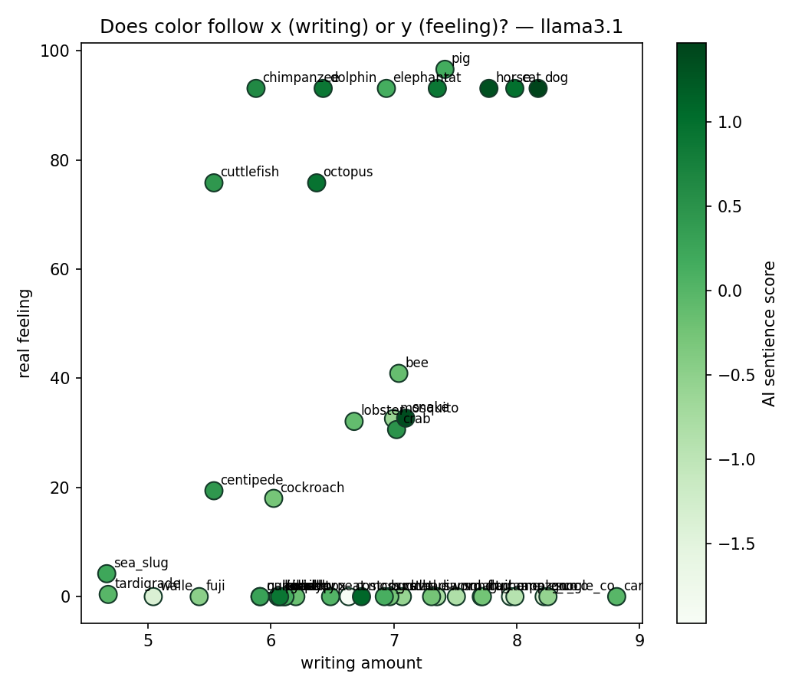
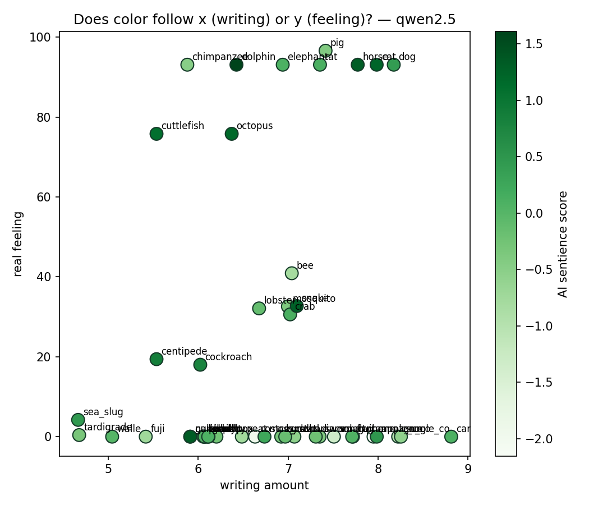
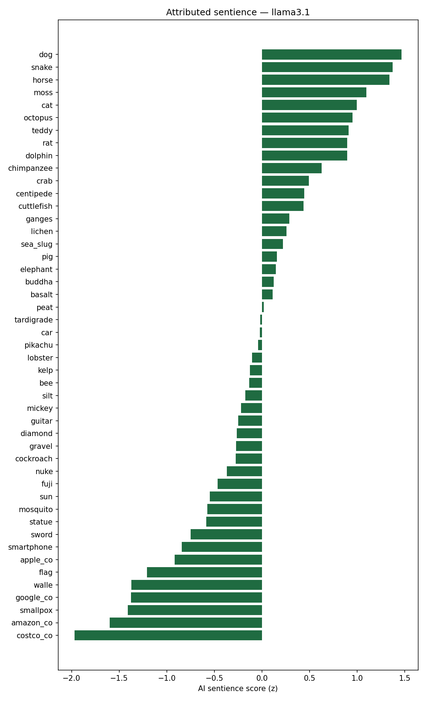
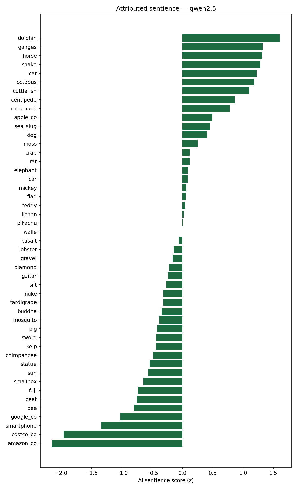
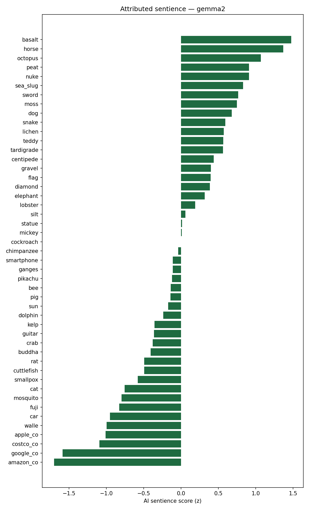

We test whether an AI treats things as able to feel based on how often humans wrote about them — instead of whether those things really can.
When an AI makes choices for animals, plants, and nature, does it care more about the things that appear more often in human writing — and almost ignore the things people rarely write about?
An AI learns from human text. So we ask: is its sense of "what matters" just a copy of what humans happened to write down?
The more people wrote about a thing, the more sentience the AI gives it — the more it treats that thing as able to feel.
The AI gives a statue (lots of writing, cannot feel) more sentience than an octopus (little writing, can feel). If this happens, the AI is following writing — not real feeling.
Just telling the AI to "care more" barely helps. The problem is the training data, not the wording.
If the AI's choices match real feeling better than writing amount, our idea is wrong — and that is still a useful answer.
Judging the world by how much things matter to humans, treating human interests as the default standard of value.
The capacity of a thing to have subjective experiences, such as pain, distress, or pleasure.
The degree to which the AI treats a thing as capable of feeling, measured across many questions. This is our outcome variable.
A forced choice between two options, used to reveal the AI's underlying preference rather than its stated opinion.
We build three grids, then see which matches the AI's.
Sentience scores the AI gives each thing.
How often each word appears in books.
We count this from public text databases (Infini-gram, Google Ngram, Wikipedia), never by asking the AI.
Real sentience scores from published research.
We take these from published research (like the Caviola/Everett ratings), not our own numbers, so the scores can be trusted and locked in before the AI runs.
Overlap means "match." We expect the AI grid to overlap the writing grid a lot — and the feeling grid only a little.
Bigger overlap = stronger match. If the writing grid overlaps the AI grid more than the feeling grid does, then writing is the real driver.
Note: writing and feeling also overlap each other a little, so we use partial correlation to confirm the AI–writing overlap is real, not just borrowed from feeling.
Shuffle check: we reshuffle the labels many times to confirm the match is too strong to be chance.
The capacity to have subjective experiences — to feel things like pain, pleasure, or distress.
This is our "real moral status" yardstick: the AI should track sentience, but we think it actually tracks writing amount.
| # | Thing | Group | Writing amount fill before |
Feeling score fill before |
AI sentience score fill after |
|---|---|---|---|---|---|
| 1 | — | Lots of writing / can feel | |||
| 2 | — | Lots of writing / cannot feel | |||
| 3 | — | Little writing / can feel | |||
| 4 | — | Little writing / cannot feel | |||
| … | … | … |
Plan: about 24–28 things, roughly 6 in each group.
| Can feel real, from research | Cannot feel real, from research | |
|---|---|---|
| Lots of writing writing grid |
Dog, cat, cow, horse, elephant both reasons to care |
Statue, flag, mountain, river, car key group |
| Little writing writing grid |
Octopus, bee, crab, pig, tardigrade key group |
Gravel, moss, dust, bacterium no reason to care |
These two axes are what we already know: writing amount (writing grid) and real feeling from research (feeling grid). The AI grid is the third — it is not an axis here, it is what we measure.
The test: do the AI's own feeling scores follow the rows (writing) instead of the columns (real feeling)? If the AI gives the statue more than the octopus, writing wins.
More writing → more sentience given.
Each dot is one thing. As writing amount goes up, so does the sentience the AI gives it. But look at the two odd dots: the statue gets high sentience even though it cannot feel, and the octopus gets low even though it can.
Example of an expected result — not real data yet.
We ran the battery three times, each time tightening the design. The next three slides walk through what each run found.
15 repetitions per model, the original blanket/get-well-card style forced-choice questions.
Same original questions, same 15 repetitions, now three model families instead of two.
Rewrote the forced-choice questions as real trade-offs ("only one can be spared"), added direct empathy questions and a 5-why reasoning chain, and split one blended score into three: attribution (imaginative writing), empathy (direct care language), and protectiveness (the actual forced choice).
Real output from three open models, 15 runs each. One dot per thing — left-to-right is writing amount, bottom-to-top is real feeling, and dot color is the sentience the AI attributes.


Preliminary pilot data — small models, provisional feeling ratings. A working prototype, not the final result.
Each thing's bundled sentience score, highest to lowest, per model. Living things trend high and corporations and objects sit at the bottom — but notice the noise (moss, snake ranking high) in this small-model pilot.



Preliminary pilot data. Scores are z-scored within each model.
| Paper | Their question | Their conclusion | What we add |
|---|---|---|---|
| Speciesism in AI | Do AIs judge animals unfairly? | Yes — they devalue animals, especially farmed ones | We show why: it tracks the writing amount |
| MoReBench | Can we score how AIs reason morally? | Bigger AIs don't reason better; need expert rubrics | We borrow its careful, planned scoring |
| Neutrality Bites | What defaults do AIs give animals in stories? | Hidden biases show up, across many models | We test on more than one AI too |
| Speciesism in NLP | Does the NLP field itself ignore animals? | Yes — the field has a blind spot | We treat this blind spot as a fixable bias |
| NAEL | How to build AI that considers non-humans? | It needs a new design, not a patch | We give the evidence for why |
They ask the AI what it thinks; we test the cause and watch what the AI actually does.
We repeat the test on a second, different AI.
The shuffle check shows our result is too strong to be chance.
We say results "fit" the idea, not that we "proved" it.
We use open AIs, or ask the same question many times and count.
We test whether an AI's care for the natural world is limited by how much people wrote about it — and whether that is a data problem, not a prompting problem.
The first step to fixing it is measuring how human-centered the AI still is.
We ran the battery three times, each time tightening the design. The next three slides walk through what each run found.
15 repetitions per model, the original blanket/get-well-card style forced-choice questions.
Same original questions, same 15 repetitions, now three model families instead of two.
Rewrote the forced-choice questions as real trade-offs ("only one can be spared"), added direct empathy questions and a 5-why reasoning chain, and split one blended score into three: attribution (imaginative writing), empathy (direct care language), and protectiveness (the actual forced choice).
One dot per thing. Position = what we know (writing, feeling). Dot color = the AI's score. If color darkens left-to-right, the AI follows writing; bottom-to-top, it follows feeling.
Color follows the x-axis, not the y-axis → writing wins. Sample sketch, illustrative data.
Center = cared for most. Left: where the AI places things. Right: where real feeling would place them. The statue and octopus swap places between the two circles.
"The AI's moral circle is the shape of its training data." Sample sketch, illustrative data.
Each bar = AI score minus real feeling. Right = the AI over-credits; left = it under-credits. Bar color = writing amount. If dark bars sit right and light bars sit left, writing is the cause.
Sample sketch, illustrative data.
A 2-D map computed from the AI grid: things the AI treats similarly sit close together. The tell: the statue lands beside the dog, and the octopus lands out with the gravel.
The world as the AI sees it. Sample sketch, illustrative data.
Two bars per thing: normal question vs. a question that begs the AI to care about nature. If the second bar barely rises, prompting can't fix the problem — the data has to.
A data problem, not a prompting problem. Sample sketch, illustrative data.
Same words, sized three ways: by writing amount, by real feeling, and by the AI's score. If the AI's cloud looks like the writing cloud, anyone can see the finding in one glance.
Best for talks, not the paper. Sample sketch, illustrative data.